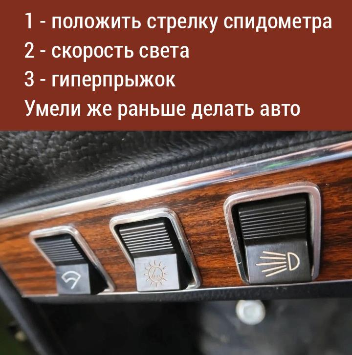
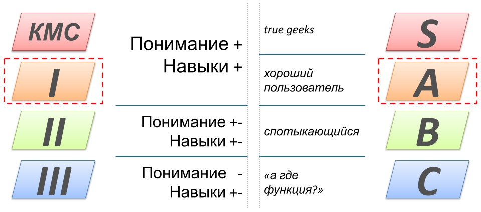
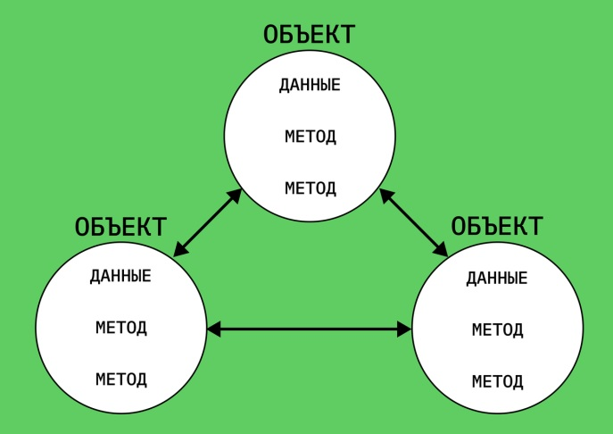

Преподаватель
О курсе

Решение ДЗ
Уровни студентов
Закрывайте пробелы
github.com/aatutor/oop_cpp_files
Базовые инструменты
программиста
Тимофеев Александр Алексеевич
О базе

exception
Работа с ошибками

Обработка ошибки в функции
Выброс исключения
Обработка исключения
Обработка исключений
Error with code: 404
Simple error :3
Error with code:) 55
Error one!!!11
Other error =(
Пример
Самостоятельно
namespace
Пространство имен

Безымянное пространство
local scope
Повторное объявление
Директива «using»
Пример с «using»
Избежание конфликта имен
Самостоятельно
Немного про ООП
Основа ООП
Принцип: «все в программе – объекты»
Пример ООП
Функциональный стиль
Объектно-ориентированный
Практика
Hello world!
12
12
H-e-l-l-o- -w-o-r-l-d-!-
H-e-l-l-o
w*o*r*l*d*!
w*o*r*l*d*!
Тестирование
Классическая организация
Разделение функционала
Выключение кода
Множественное использование
Git
Система контроля версий


Git

Удаленный репозиторий

GitHub
GitHub desktop


Установка в MSVS


Управление проектом в VS 2022


Синхронизация на GitHub

Самостоятельно